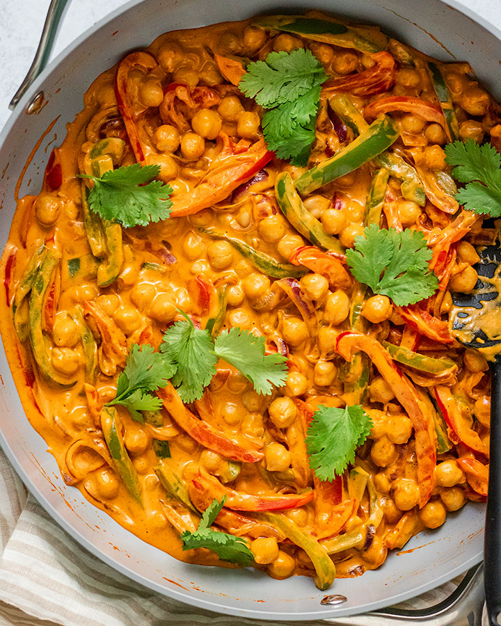

Chipotle orange chickpeas

Description
Even when it’s warm out, I still prefer cooked meals. I will say though, I don’t enjoy the temperature it makes my home, so when I can, I try to
focus on quick meals that don’t involve too much cooking. That can encompass any of my favorites like my easy balsamic tofu or curried red bean
skillet.
But, quick cooking also comes in handy anytime of year as far as I’m concerned. There are days when I don’t really want to mess around too much
in the kitchen, so recipes like these Chipotle Orange Chickpeas come in handy.
Ingredients
- 1 cup full fat canned coconut milk
- 1–2 chipotle peppers in adobo sauce (for less spicy, opt for 1 pepper)
- 1 tbsp maple syrup
- 1 tbsp soy sauce or coconut aminos for gluten free
- 4 cloves garlic
- ½ tsp cumin
- 1 tsp sazon or smoked paprika
- Zest of one orange
- 1–2 tsp neutral oil
- ½ red onion, thinly sliced
- 1 red bell pepper
- 1 green bell pepper
- 1, 15 oz can chickpeas, rinsed and drained
- Salt and pepper to taste
Instructions
-
To a blender, add in your coconut milk, chipotle peppers, maple syrup, soy sauce, garlic, cumin, sazon and orange zest. Blend until completely
smooth, then set aside.
- Heat up your oil in a large sauté pan over medium heat and add in your onions with a pinch of salt and sauté them for about 2 minutes.
- Add in your sliced peppers and continue to sauté along with the onions until your peppers are softened.
- Pat your chickpeas dry with a clean kitchen towel, then add to your pan with the peppers and sauté to lightly brown for a few minutes.
-
Pour in your sauce and stir into the chickpeas and peppers to fully coat then allow to cook for about 2-3 minutes and then remove from the
stove top. Add salt and pepper to taste, then serve.